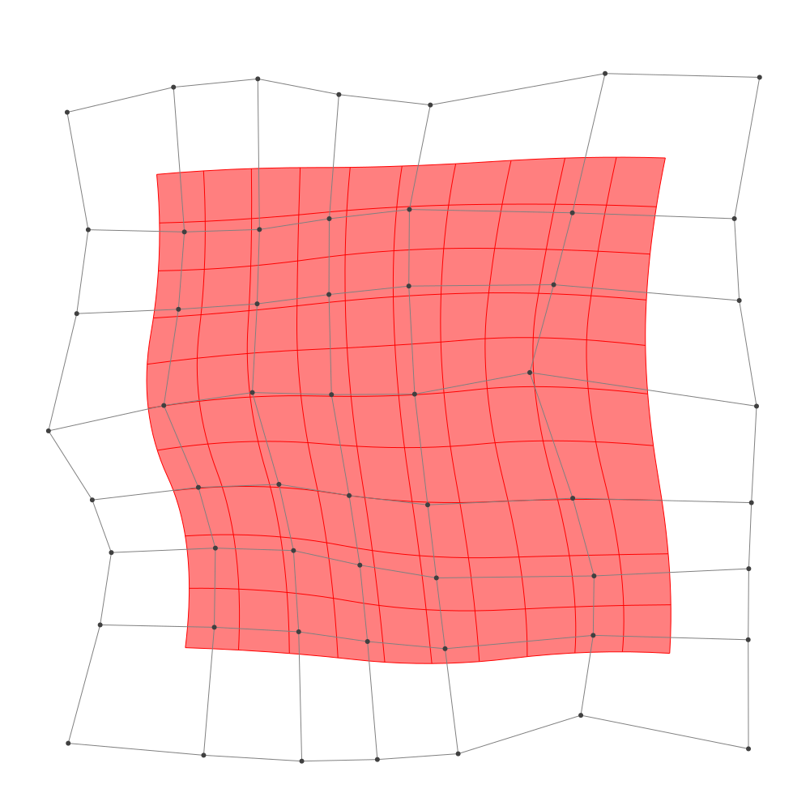
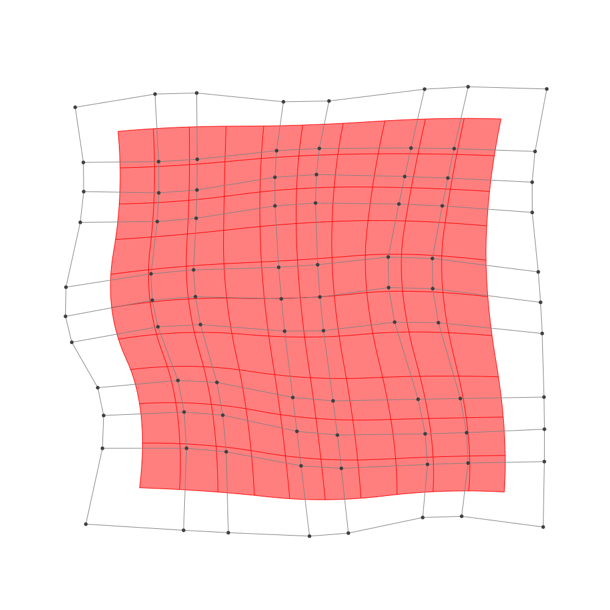

Refinement
BasicBSpline.refinement — FunctionRefinement of B-spline manifold with given B-spline spaces.
julia> p = 2 # degree of polynomial2julia> k = KnotVector(1:8) # knot vectorKnotVector([1.0, 2.0, 3.0, 4.0, 5.0, 6.0, 7.0, 8.0])julia> P = BSplineSpace{p}(k) # B-spline spaceBSplineSpace{2, Float64}(KnotVector([1.0, 2.0, 3.0, 4.0, 5.0, 6.0, 7.0, 8.0]))julia> rand_a = [SVector(rand(), rand()) for i in 1:dim(P), j in 1:dim(P)]5×5 Matrix{StaticArrays.SVector{2, Float64}}: [0.342449, 0.323852] [0.999186, 0.759374] … [0.329208, 0.113968] [0.914659, 0.0965019] [0.897703, 0.836186] [0.349153, 0.590748] [0.988017, 0.141469] [0.660947, 0.360807] [0.573167, 0.160592] [0.670845, 0.669017] [0.924888, 0.314543] [0.970524, 0.592621] [0.740277, 0.255557] [0.73494, 0.499517] [0.877684, 0.545508]julia> a = [SVector(2*i-6.5, 2*j-6.5) for i in 1:dim(P), j in 1:dim(P)] + rand_a # random5×5 Matrix{StaticArrays.SVector{2, Float64}}: [-4.15755, -4.17615] [-3.50081, -1.74063] … [-4.17079, 3.61397] [-1.58534, -4.4035] [-1.6023, -1.66381] [-2.15085, 4.09075] [0.488017, -4.35853] [0.160947, -2.13919] [0.0731673, 3.66059] [2.17084, -3.83098] [2.42489, -2.18546] [2.47052, 4.09262] [4.24028, -4.24444] [4.23494, -2.00048] [4.37768, 4.04551]julia> M = BSplineManifold(a,(P,P)) # Define B-spline manifoldBSplineManifold{2, (2, 2), StaticArrays.SVector{2, Float64}, Tuple{BSplineSpace{2, Float64}, BSplineSpace{2, Float64}}}((BSplineSpace{2, Float64}(KnotVector([1.0, 2.0, 3.0, 4.0, 5.0, 6.0, 7.0, 8.0])), BSplineSpace{2, Float64}(KnotVector([1.0, 2.0, 3.0, 4.0, 5.0, 6.0, 7.0, 8.0]))), StaticArrays.SVector{2, Float64}[[-4.157551176177652, -4.1761478305211295] [-3.500813731941772, -1.7406255194334648] … [-3.865073622343807, 1.9077086060568988] [-4.170791777229088, 3.6139677249324857]; [-1.5853407832131279, -4.40349809557717] [-1.6022970110421766, -1.6638138764195822] … [-2.0723456104126274, 1.774696998217748] [-2.1508474518820293, 4.090748134659813]; … ; [2.1708447463347995, -3.830983395728779] [2.424888137738789, -2.1854573639134416] … [1.9947126675584015, 2.069069489154223] [2.470524011814284, 4.0926213250788175]; [4.2402773167659165, -4.244442954831154] [4.234939885585402, -2.000482904612573] … [4.011504823437308, 1.992518322757625] [4.377684469136609, 4.045507587304562]])
h-refinemnet
Insert additional knots to knot vector.
julia> k₊=(KnotVector(3.3,4.2),KnotVector(3.8,3.2,5.3)) # additional knotvectors(KnotVector([3.3, 4.2]), KnotVector([3.2, 3.8, 5.3]))julia> M_h = refinement(M,k₊=k₊) # refinement of B-spline manifoldBSplineManifold{2, (2, 2), StaticArrays.SVector{2, Float64}, Tuple{BSplineSpace{2, Float64}, BSplineSpace{2, Float64}}}((BSplineSpace{2, Float64}(KnotVector([1.0, 2.0, 3.0, 3.3, 4.0, 4.2, 5.0, 6.0, 7.0, 8.0])), BSplineSpace{2, Float64}(KnotVector([1.0, 2.0, 3.0, 3.2, 3.8, 4.0, 5.0, 5.3, 6.0, 7.0, 8.0]))), StaticArrays.SVector{2, Float64}[[-4.157551176177652, -4.1761478305211295] [-3.763508709636124, -2.71483444386853] … [-3.910931345576599, 2.1636474738882367] [-4.170791777229088, 3.6139677249324857]; [-2.4856144207507116, -4.3239255028075565] [-2.3543124863145057, -2.7439889720076867] … [-2.723504547263284, 2.13664465050552] [-2.8578279657534997, 3.923874991255248]; … ; [2.1708447463347995, -3.830983395728779] [2.323270781177193, -2.8436677766395766] … [2.066084369196784, 2.372602264542912] [2.470524011814284, 4.0926213250788175]; [4.2402773167659165, -4.244442954831154] [4.237074858057608, -2.8980669247000055] … [4.066431770292203, 2.3004667124396656] [4.377684469136609, 4.045507587304562]])julia> save_png("2dim_h-refinement.png", M_h) # save image

Note that this shape and the last shape are identical.
p-refinemnet
Increase the polynomial degree of B-spline manifold.
julia> p₊=(1,2) # additional degrees(1, 2)julia> M_p = refinement(M,p₊=p₊) # refinement of B-spline manifoldBSplineManifold{2, (3, 4), StaticArrays.SVector{2, Float64}, Tuple{BSplineSpace{3, Float64}, BSplineSpace{4, Float64}}}((BSplineSpace{3, Float64}(KnotVector([1.0, 2.0, 3.0, 3.0, 4.0, 4.0, 5.0, 5.0, 6.0, 6.0, 7.0, 8.0])), BSplineSpace{4, Float64}(KnotVector([1.0, 2.0, 3.0, 3.0, 3.0, 4.0, 4.0, 4.0, 5.0, 5.0, 5.0, 6.0, 6.0, 6.0, 7.0, 8.0]))), StaticArrays.SVector{2, Float64}[[-3.592735652627302, -3.592485550755641] [-3.3205080698481035, -2.349377569539314] … [-3.633247812684269, 2.337512785201207] [-3.7671721973422527, 3.2414583461028736]; [-1.9902110026617732, -3.6933587427813475] [-1.942547977237552, -2.348863458875046] … [-2.400226419160836, 2.3504703829028526] [-2.4584120326801937, 3.4576799496600117]; … ; [2.5684534883166297, -3.4635770635252063] [2.6738601154699144, -2.590944546083933] … [2.4452295421623322, 2.563425479928536] [2.6739992394105583, 3.577654516942695]; [3.9048450648399586, -3.6394777665262494] [3.923791417798407, -2.5673672429505614] … [3.771485696322173, 2.5172976071011948] [3.963711494051539, 3.5413391203228017]])julia> save_png("2dim_p-refinement.png", M_p) # save image

Note that this shape and the last shape are identical.